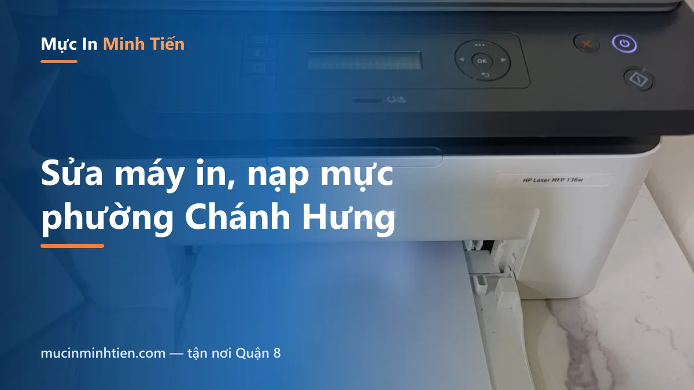
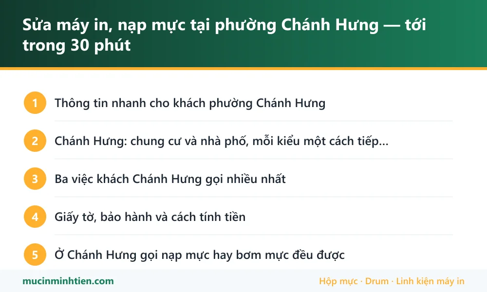

Sửa máy in, nạp mực tại phường Chánh Hưng — tới trong 30 phút

Phường Chánh Hưng là địa bàn kỹ thuật viên chạy hằng ngày, nên phần lớn ca nhận được trong 30 phút là có mặt: Phạm Thế Hiển, Dương Bá Trạc, Âu Dương Lân, Tạ Quang Bửu, khu cầu Chữ Y và các chung cư dọc kênh Đôi. Nạp mực từ 80.000đ, kiểm tra và in thử trước mặt khách rồi mới báo giá.
Thông tin nhanh cho khách phường Chánh Hưng
| Hạng mục | Chi tiết |
|---|---|
| Thời gian có mặt | Khoảng 30 phút trong giờ hành chính — đây là tuyến kỹ thuật viên chạy mỗi ngày |
| Đường hay đi | Phạm Thế Hiển, Dương Bá Trạc, Âu Dương Lân, Tạ Quang Bửu, Bùi Minh Trực, Nguyễn Thị Tần |
| Mốc quen | Cầu Chữ Y, cầu Nguyễn Tri Phương, chợ Rạch Ông, các chung cư dọc kênh Đôi |
| Khách thường gặp | Nhà phố, hộ kinh doanh, phòng khám, trường học, văn phòng công ty nhỏ, tiệm photo |
| Làm tại chỗ | Nạp mực, thay drum – gạt – trục từ, vệ sinh máy, gỡ kẹt giấy, cài driver, nối máy in qua mạng |
| Phí kiểm tra | Không thu phí kiểm tra riêng. Kiểm tra xong báo giá, khách thấy hợp lý mới làm |
Chánh Hưng: chung cư và nhà phố, mỗi kiểu một cách tiếp cận
Phường này có hai kiểu địa chỉ rất khác nhau, và kinh nghiệm cho thấy hỏi trước một câu là đỡ mất cả hai bên nửa tiếng.
- Chung cư dọc kênh Đôi và khu Giai Việt: bảo vệ thường yêu cầu đăng ký khách, có nơi phải có cư dân xuống đón hoặc bấm thang. Khách báo giúp block, tầng và số căn khi đặt lịch là vào thẳng.
- Nhà phố và hẻm quanh Phạm Thế Hiển, Bùi Minh Trực: nhiều hẻm nhỏ thông nhau, số nhà xuyệt dài. Nhắn vị trí bản đồ qua Zalo nhanh hơn đọc địa chỉ.
Kỹ thuật viên đi xe máy, mang theo thùng đồ nghề và vật tư của các dòng máy phổ biến nên vào hẻm hay lên chung cư đều được.
Ba việc khách Chánh Hưng gọi nhiều nhất
1. Hết mực giữa lúc cần in gấp. Trường học, phòng khám và tiệm photo hay rơi vào cảnh này. Nếu hộp mực còn vỏ tốt thì nạp tại chỗ 15–20 phút là in lại được; hộp đã nạp nhiều lần và bản in bắt đầu có sọc thì nên thay trống mực cùng lúc để khỏi gọi lại lần nữa.
2. Bản in mờ dần dù mực vẫn còn. Phần lớn là trục từ yếu chứ không phải hết mực — cách phân biệt nằm trong bài HP 107a in mờ, nhạt chữ. Với dòng HP 107A, trục từ thay lẻ rẻ hơn nhiều so với mua hộp mực mới.
3. Máy kẹt giấy liên tục. Nhà ở gần kênh, độ ẩm cao, giấy để lâu hút ẩm là kẹt. Trước khi gọi thợ, thử thay ram giấy mới và làm theo bài máy in không kéo giấy — nhiều ca tự xử lý được.
Giấy tờ, bảo hành và cách tính tiền
Hạng mục nào cũng báo giá trước khi làm. Vật tư thay có bảo hành theo từng loại; hộp mực nạp bảo hành đúng lượng mực — trong thời gian bảo hành mà bản in lem hay kẹt thì xử lý lại không tính tiền.
Khách là công ty, trường học cần hoá đơn VAT thì báo lúc đặt lịch để kỹ thuật viên mang sẵn giấy tờ. Thanh toán tiền mặt hoặc chuyển khoản sau khi in thử đạt.
Máy phải mang về xưởng — thay trọn cụm sấy, sửa bo, sửa nguồn — thì có phiếu nhận máy ghi rõ tình trạng, thường 1–2 ngày làm việc.
Ở Chánh Hưng gọi nạp mực hay bơm mực đều được
Người trong phường gọi bằng nhiều cách: nạp mực, bơm mực, đổ mực, thay mực máy in. Bên mình hiểu là một việc và làm ngay tại nhà, tại tiệm, khoảng 15–20 phút mỗi hộp.
Vì đây là tuyến chạy hằng ngày nên khách Chánh Hưng có một lợi thế: gọi buổi sáng gần như luôn xong trong buổi. Chỉ cần báo giúp tên model máy ghi ở mặt trước — kỹ thuật viên lấy sẵn hộp mực, trống và gạt đúng dòng máy rồi mới đi, không phải chạy về lấy đồ.
Khách trong hẻm hoặc chung cư thì nhắn vị trí trên bản đồ qua Zalo, nhanh hơn đọc số nhà.
Bảng giá dịch vụ tại phường Chánh Hưng
| Hạng mục | Áp dụng cho | Giá tham khảo |
|---|---|---|
| Nạp mực hộp mực laser | HP, Canon, Brother phổ thông | 80.000 – 150.000 đ |
| Bơm mực máy in phun | Epson, Canon dòng phun | từ 60.000 đ/màu |
| Thay gạt mực | Bản in có sọc đen dọc | từ 40.000 đ |
| Thay trục từ | Bản in mờ dần dù mực còn | từ 34.000 đ |
| Thay trống (drum) | Vệt lặp đều theo chu kỳ | từ 120.000 đ |
| Vệ sinh máy in tận nơi | Máy dùng lâu chưa bảo dưỡng | từ 100.000 đ |
| Xử lý kẹt giấy, máy nhai giấy | Laser và phun | Kiểm tra rồi báo giá |
Giá vật tư lấy đúng theo kho — xem bảng giá 773 mã. Kỹ thuật viên kiểm tra và báo giá trước khi làm; khách đồng ý mới thay.
Vật tư mang sẵn theo xe khi tới phường Chánh Hưng
Vật tư mang theo khi chạy tuyến Chánh Hưng, chọn theo dòng máy hay gặp ở khu dân cư và trường học:
| Vật tư mang theo | Dùng cho | Ghi chú |
|---|---|---|
| Hộp mực 12A, 85A, 35A | Canon 2900, HP 1102, HP 1005 | <a href="../../muc-in/hop-muc-12a/">Xem mã 12A</a> · <a href="../../muc-in/hop-muc-85a/">85A</a> |
| Trục từ, gạt mực rời | Bản in mờ hoặc có sọc sau nhiều lần nạp | Thay lẻ từ 34.000đ, không cần thay cả hộp |
| Hộp quang, hộp scan Canon 2900 | Máy 2900 in ra trang trắng hoặc mờ một bên | <a href="../../san-pham/hop-scan-hop-quang-canon-lbp-2900-12a/">Xem hộp quang Canon 2900</a> |
| Mực Epson 003 | Máy phun ở nhà riêng, phòng khám nhỏ | <a href="../../muc-in/muc-epson-003/">Xem trang mực 003</a> |
| Quả đào, bố thắng | Máy kẹt giấy, kéo nhiều tờ | Thay theo cặp cho bền |
Lỗi hay gặp ở phường Chánh Hưng và bài hướng dẫn tự xử lý
Nhiều ca chỉ cần làm theo bài là xong, không phải gọi thợ. Đọc trước cho đỡ tốn tiền:
- Máy in không kéo giấy — giấy hút ẩm và quả đào mòn là hai lý do chính
- Máy in bị sọc đen dọc — gạt mực tới hạn
- Máy in ra giấy trắng — kiểm theo bảng trước khi gọi thợ
- Máy in không in được, báo Offline — phần lớn tự xử lý trong 5 phút
- Trang dịch vụ chung cho Quận 8 — xem phạm vi và bảng giá đầy đủ

trueCâu hỏi thường gặp — khách phường Chánh Hưng
Ở Chánh Hưng gọi bao lâu thì có thợ?
Nhà trong chung cư có lên được không?
Có thu phí kiểm tra khi không sửa không?
Nạp mực tại nhà có sạch không, có làm bẩn nhà không?
Trường học, công ty cần hoá đơn VAT thì sao?
Máy cũ quá thì nên sửa hay thay?
Nạp mực máy in ở phường Chánh Hưng bao lâu có người tới?
Gọi buổi chiều muộn còn nhận không?
Khu vực phục vụ khác
- Sửa máy in, nạp mực tận nơi Quận 7 — có mặt trong 45–60 phút
- Nạp mực máy in Phú Mỹ Hưng — tận nơi, quen thủ tục toà nhà
- Nạp mực, sửa máy in tận nơi Quận 4 — sát trung tâm, tới nhanh
- Sửa máy in, nạp mực tận nơi Bình Chánh — Trung Sơn, Bình Hưng, Vĩnh Lộc
- Sửa máy in, nạp mực tận nơi Quận 8 — có mặt 30–45 phút, báo giá trước
- Sửa máy in, nạp mực tận nơi Nhà Bè — nhận cả khu công nghiệp Hiệp Phước
- Sửa máy in, nạp mực xã Hiệp Phước và khu công nghiệp Hiệp Phước